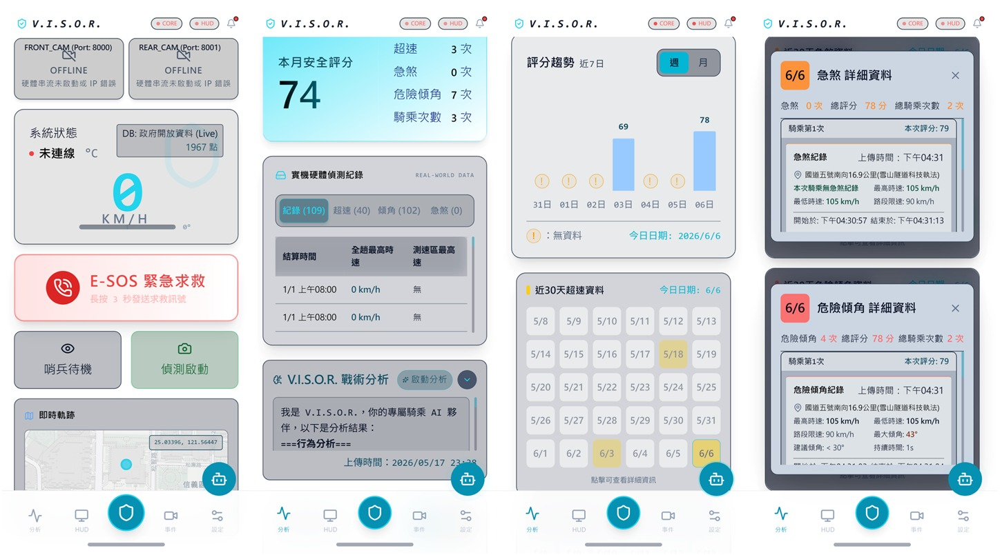

Advanced Rider Assistance with Visual Intelligent Safety on Road
AI-Powered Rider Assistance: Active Safety Innovation & Edge Inference
SUPERVISOR
Hsuan-Che, Yang | Assistant Professor
hc_yang@mail.chihlee.edu.tw
PRESENTER
Simon C.-Y. Wong | Student
11210278@mail.chihlee.edu.tw
The Motorcycle Safety Crisis
In high-density mixed traffic, motorcycle riders are the Vulnerable Road Users (VRUs). Traffic conflicts and blind spots directly amplify injury and fatality risks.
- Asymmetrical Protection: Motorcycles lack rigid protective structural frames, causing a fatality rate up to 28 times higher than passenger cars.
- Environmental Blind Spots: Riders must react in split-seconds to improper lane changes, tailgating, or sudden braking.
- No Dedicated Solutions: Commercial ADAS and radars are designed for cars — bulky, expensive, and impossible to install on budget 125cc scooters.
of all fatal & injury traffic accidents in Taiwan (2023) involve motorcycles — the highest proportion among all vehicle types.
victims are young riders aged 18 to 24 — lack of experience, tailgating, and failure to notice road conditions are the leading causes.
The V.I.S.O.R. Proposal
We propose the visually intelligent, cost-effective V.I.S.O.R. system
A low-cost, pure-vision, all-around active safety shield built for the motorcycle community — turning a passive helmet into an active electronic protection system.
- Dual-Direction Monitoring: Front 120° + rear 160° lenses → ~280° blind-spot-free coverage.
- Dynamic Threat Zoning: Instantly classifies threat entry points, auto-switching front/rear alarms based on approach vector.
- Intuitive HUD + Buzzer Alert: Complex road computation data is distilled into minimalist dynamic visual blinking on the helmet HUD and audio buzzer tones — delivering early warning without increasing the rider's cognitive load, preserving precious mental resources for road judgment.
ARAS, Edge AI & YOLOv8n Selection
ABS / Helmet
Accident-only
ARAS (Ours)
Pre-crash
Our research positions as an ARAS (Advanced Rider Assistance System) — monitoring the environment with sensors + AI to proactively intervene with warnings before accidents happen.
Edge Computing Environment
BCM2712, 4×A76 @2.4GHz, 8GB
- CPU-only — No GPU dependency
- <$100 — Affordable for mass adoption
- ~4× slower than desktop CPU
Why YOLOv8n?
- Anchor-Free Detection: No anchor tuning — adapts to varied viewpoints.
- Lightweight: Only 3.2M params — fits with lane + tracking.
- Optimized 320px: 75% less compute vs 640px.
Why Car ADAS Fails on Motorcycles
| Parameter | Car ADAS | V.I.S.O.R. |
|---|---|---|
| Cost | Expensive LiDAR/radar | Dual camera + Pi <$100 |
| Dynamics | Minor roll/pitch | 6‑axis IMU corrects 45° lean |
| Network | Wired CAN Bus | UDP + BLE <15ms |
| Lane | Manual calibration | End-to-end AI lane filter |
| User | High-end cars | 125cc–150cc scooters |
Vision Pipeline Flow
Distributed Edge Compute Architecture
Distributed Architecture: Decoupling Compute-Intensive AI from Real-Time Display
Why Dual-Node Architecture?
Running AI inference, frame acquisition, and display rendering on a single SBC often leads to latency and stuttering due to resource contention.
- Raspberry Pi 5 (Core Engine): Dedicated to 320px video stream acquisition, deep learning inference, and object tracking.
- Raspberry Pi Zero 2W (HUD Node): Small form factor, ultra-low power. Installed in the helmet/dashboard, it receives lightweight telemetry and drives the OLED screen.
Data Augmentation & IMU Dynamic ROI
?? Data Augmentation Sandbox
Taiwan road data is scarce in public datasets. We built our own (2,078 images + 1,560 blind-spot frames) and augmented with synthetic effects.
Current: Real Taiwan dashcam footage
?? Cornering Roll Compensation
When a bike leans up to 45°, the camera tilts with it. Our 6-axis IMU + Kalman filter provide inverse-rotation calibration to keep the AI's ROI locked to the real road surface.
Perception Math & Lane Filters
1. Monocular Distance & TTC
Geometric similar triangle projection + EMA filter:
| Class | Width | Dist @320px |
|---|---|---|
| car | 1.8m | 36m |
| scooter | 0.7m | 14m |
| truck | 2.5m | 50m |
3-Tier Threat
| Level | TTC | Dist |
|---|---|---|
| CRITICAL | <1.0s | <2.0m |
| WARNING | <1.5s | <4.0m |
| CAUTION | <2.5s | <8.0m |
2. Centroid Tracking
- Euclidean distance association + Kalman filter smoothing
- Cache up to 5 frames for occluded objects
LSTR Lane Curve Model
- • EMA smoothing: α=0.4 / sudden drop 0.08 + coast 15 frames
- • Logspace Y-Sampling: 50 pts (dense near, sparse far)
- • Skip-2 frame: infer every 3 frames, amortize ~17ms/frame
Virtual Lane Filtering
Parked vehicles along curbs cause false alarms. We filter by active lane region (X: 0.25–0.75) and only escalate threats with predicted trajectory intersecting the lane.
Real-World Video Validation
The following real-road footage demonstrates V.I.S.O.R.'s end-to-end detection pipeline running on 1280×720 dashcam video with YOLOv8n + LSTR CULane TorchScript. Bounding boxes, lane curves, distance, and threat levels are rendered in real time.
f0ace550 · Urban Heavy Traffic
2,676 detections · 106 threats · 32.5 FPS
50c9816b · Suburban Light Traffic
1,682 detections · 22 threats · 38.3 FPS
Benchmarks & Edge Optimization
Bottleneck
Pi 5 Roadmap
| Pri | Action | FPS |
|---|---|---|
| ✓ | Current | ~10.8 |
| 1 | imgsz=256 | ~13 |
| 2 | ONNX INT8 | ~20-25 |
YOLO Models
| Model | Prec | Rec | mAP | FPS |
|---|---|---|---|---|
| YOLOv8n Base | .421 | .285 | 29.8% | 5-8 |
| YOLOv8n Opt | .543 | .326 | 33.6% | 15-20 |
| YOLOv26n (Future) | .561* | .338* | 34.9%* | 20-25 |
Lane Detection
| Model | Params | Size | Pi 5 FPS |
|---|---|---|---|
| LSTR (Ours) | 765K | 3.1MB | ~10.8 |
| UFLD v2 | 12M | 183MB | ~2.3 |
Video Validation
| Video | Scene | Detections | FPS |
|---|---|---|---|
| f0ace550 | Urban Heavy | 2,676 | 32.5 |
| 50c9816b | Suburban | 1,682 | 38.3 |
VISOR Mobile App Interface

E-SOS
Auto SMS with GPS when bike tips over >15s — fully autonomous crash response.
Gemini AI
Analyzes speeding, hard braking, dangerous lean — generates personalized safety tips.
Supabase Cloud
BLE + Supabase sync. RLS security. TerminalConsole log streaming.
Cross-platform app (React + Cordova) — serves as the rider's command center. Displays real-time dashboard with speed, lean angle, and threat levels — synced from Pi 5 over BLE.
System Contributions & Achievements
High Edge Efficiency
Maintains 15-20 FPS on a sub-$100 Raspberry Pi 5 core, processing real-time dual-camera streams and lane tracking.
Data Pipeline Innovation
Augments real video with Stable Diffusion weather and motion blur, overcoming data scarcity for motorcycle-specific threats.
Holistic Two-Wheeled ADAS
Integrates 6-axis IMU for roll tilt calibration, and implements a multi-protocol network to bypass cellular blocking.
Thank You for Your Attention!
Q & A / Thank You
Future Work: YOLOv26n Upgrade
In this paper, we demonstrated YOLOv8n as our detection backbone. As a next step, we plan to upgrade to YOLOv26n — a lighter (2.6M params) yet more accurate model projected to deliver +1.3% mAP and 20-25 FPS on Pi 5, enabling even faster and more reliable rider assistance.
Supervisor
Hsuan-Che, Yang | Assistant Professor
hc_yang@mail.chihlee.edu.tw
Presenter
Simon C.-Y. Wong | Student
11210278@mail.chihlee.edu.tw
V.I.S.O.R. System — Paper ID: 20